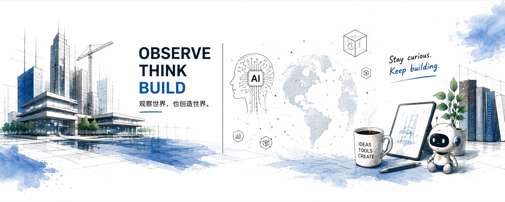

BITBUILD 建造观察局 / NEO 造物集
SINCE 2026
DWG · OBSERVE-THINK-BUILD · BANNER
SCALE 1:1

牛叔
neohoy.
AI × 建筑科技 × 造物
·
独立开发者
·
作者
REEL 01
5条线
手册 · 观察 · 造物 · 游戏 · 受托
REEL 02
3000+
公众号读者
REEL 03
100+
GitHub Stars
REEL 04
3语言
简体 / 繁體 / English 全量
— EPIGRAPH · 卷首语 —
「一个想法从看见到能用，中间隔着的从来不是灵感，
是把它做完的那些晚上。」
牛叔 · 2026
01
SELECTED WORKS
先做出来，再讲道理。
这里不是一份清单，是五条线。把文档写清楚、把行业看明白、把想到的造出来、把一个圈子的人聚起来，外加一件受人之托的——每一条都是从我自己真遇到过的问题里长出来的。
01 中文手册
02 建造观察局
03 造物集
04 游戏开发
05 海峡助手
SERIES 01
中文手册
四个站
官方文档不是没有，是没有顺序。把平铺在官方目录里的原文重排成一条能从头读到尾的路线，官方目录原样留着，要查什么还按原来的位置找。四个站同一个做法，只是对象不同。
01 — 1
AI 手册 · 开源
Claude Code 中文教程
CLAUDEBOOK
官方文档写得不差，缺的不是翻译，是顺序。190 篇按主题平铺，新人打开不知道从哪读起。这个站把同一批内容按「先能用、再用好、然后扩展、最后带团队」重排一遍，官方目录原样留着，谁都不耽误。
5 站 17 篇学习路线 · 190 篇官方文档全量 · 社区批注不会被上游覆盖 · 一个字都没经过机器翻译。
简 · 繁 · EN
⌘K 全文搜索
社区共写
在线阅读 →
claudebook-e38.pages.dev
Claude Code 中文教程
学习路线
文档
简中
STA 01 · 装上 → 用好 → 扩展
把 Claude Code
真正用起来
不是机器翻译的官方原文，也不只是照抄官方目录。而是一步一步从装不上，到能带团队用。
10 分钟跑通第一个任务
先看学习路线
SERIES 02
BitBuild 建造观察局
公众号 + 1
看行业，看趋势，看未来。建筑与科技交界处正在发生的事。不写通稿，只写我确认过的部分——包括哪些看起来很美但现在还不成立。
02 — 1
公众号 · 持续更新
BitBuild 建造观察局
OBSERVE THE INDUSTRY
看行业，看趋势，看未来。建筑与科技交界处正在发生的事，不写通稿，只写我确认过的部分——包括哪些看起来很美但现在还不成立。
不追热点，只写能放半年还成立的东西。判断错了就在后面那篇里认。
建筑观察
AI 工具
趋势判断
适老 & 生活
微信搜「BitBuild 建造观察局」 →
BitBuild 建造观察局
看行业，看趋势，看未来。
关注
AI 进工地这件事，被高估也被低估
建造观察 · 3 天前
我用 Agent 重做了一遍投标流程
AI 工具 · 上周
给爸妈做的那把椅子，改到第六版
造物实验 · 2 周前
SERIES 03
NEO 造物集
两条腿
想到，就造。AI 工具 / Agent / 文创 / 适老 / 儿童玩具。不是产品线，是一条自留地——凡是我自己或家里人真的会用的东西，就做出来试试。做坏的那些也留着，它们通常比做成的更值得写。
安龄居家
我们做什么
免费评估
适老好物
开始免费评估
先看图，再买东西
父母家的这张图，
你其实没有认真看过
3 分钟免费自测
先看看有哪些东西
全程免费 · 无需注册 · 测完立刻出图
评估人 · 最常用
老人居家安全评估
线上 3 分钟 · 出《居家风险清单》
评估房子
装修适老化评估
视频 20 分钟 · 出《改造建议书》
12
个问题，测出父母家的风险点
17
款选品
03 — 1
产品 · 演示站
安龄居家
先看图，再买东西
起点是给我爸妈家做适老化。发现真正的难处不是买不到东西，是不知道该买什么——满屏扶手和防滑垫，没人先告诉你自己家哪里危险。
所以顺序反过来：先 12 题线上自测，不用老人在旁边、不用量尺寸，答完出一张标好危险点的图；再决定买什么。选品只上 17 款，对着 MZ/T 158—2020 这类国标行标来，每款都说清为什么是它。
12 题自测
17 款选品
国标选品依据
打开演示站 →
SERIES 04
游戏开发
文档 + 社群
把文档翻完，再把用它的人聚起来。RPG Maker MV 是个中文资料稀薄的圈子。先补上最缺的那份说明书，再守着一个群，让踩过坑的人能碰上还在踩的人——两件事得一起做才有用。
WORK · 04 — 1
游戏开发 · 开源
Yanfly 插件中文文档
RPG MAKER MV · YEP
RPG Maker MV 上用得最多的插件库，官方说明只有英文。131 篇逐段中英对照，英文原文和中文翻译交替排列，备注标签与插件指令一律保留原文——照着抄不会抄错。
首页是个不依赖任何外部资源的单文件，打开就能按中文名、英文名或编号搜。插件本体版权归 Yanfly，这里只做翻译。
131 篇
10 个分类
YEP.1–128
中英对照
打开首页 →
Yanfly Engine Plugins 中文文档
RPG Maker MV
YEP.1
核心引擎
Core Engine
YEP.12
战斗引擎核心
Battle Engine Core
YEP.50
状态核心
Buffs & States Core
131
篇插件文档
10
个功能分类
YEP.1–128
覆盖编号
100%
中英对照
SERIES 05
海峡助手
公众号 + 小程序
受托做的那一件。为中華兩岸經貿發展交流協會做的公众号与小程序。协会 2017 年成立于台湾，推动两岸在经济、青年、文教、基层等领域的交流合作。
02
CONTENT SYSTEM
四个号，一条主线。
平台不一样，写的其实是同一件事：看到了什么，想明白了什么，然后动手做了什么。
CHANNEL · 01
公众号 · BitBuild
CHANNEL · 02
X · @neohoy77
CHANNEL · 03
GitHub · neohoy
CHANNEL · 04
小红书 · 牛师傅
建造观察局
主阵地。长文写行业里正在变的部分：技术进到工地要过几道关、一个新工具是真省事还是换个地方费事、哪些判断我三个月后改了口。
不追热点，只写能放半年还成立的东西。
微信搜「BitBuild 建造观察局」 →
四条内容线
建筑观察行业在变什么
AI 工具用过才写
造物实验做坏的也写
适老 & 生活给家里人做的
牛师傅 | neohoy
图文为主。公众号写清楚「为什么」，小红书就负责给出「长什么样」——手绘草图、过程照、做到一半的样子。
小红书号
9567321987
#AI
#建筑科技
#工具推荐
#造物集
#适老化设计
#文创
#创业日记
精选封面
封面统一走蓝墨手绘，四类各一个圆图标——这套视觉在首页、公众号、小红书三边保持一致。
牛老 | neohoy
短的那一端。看到什么随手记，多数是还没想清楚的半成品——想清楚了才会变成公众号长文。英文内容和海外 AI 圈的动静也主要放这里。
@neohoy77X / TWITTER
bitbuild.ccWEBSITE
BIO · 现用版本
AI × 建筑科技 × 造物
观察行业，探索技术，把想法做成有用的东西。
BitBuild 建造观察局：看行业，看趋势，看未来。
NEO 造物集：AI 工具 / Agent / 文创 / 适老 / 儿童玩具……想到，就造。
观察世界，也创造世界。
JOINED FEB 2026
BITBUILD.CC
neohoy
四本中文手册和 Yanfly 插件文档的源码都在这儿，都是能直接 clone 下来本地跑的静态站。发现哪句写错了，欢迎直接提 PR——比留言更省事。
github.com/neohoy →
© 2026 NEOHOY · BITBUILD.CC
OBSERVE · THINK · BUILD